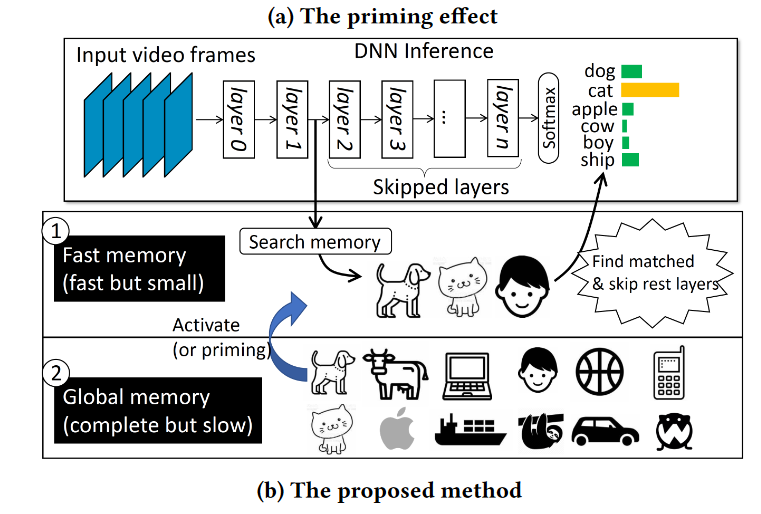
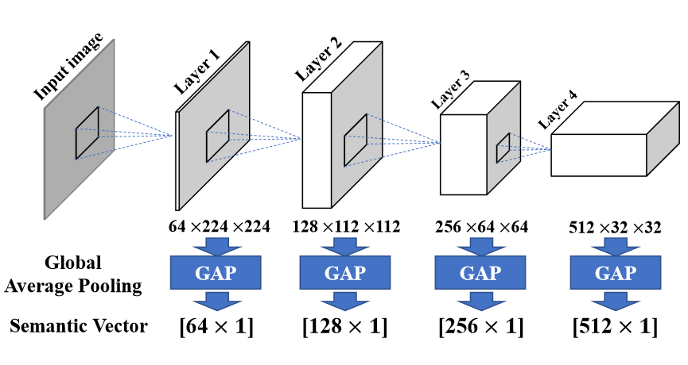
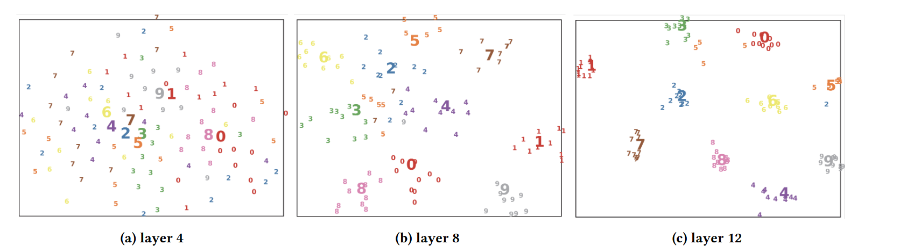

文章简介
本文借鉴了心里学中的priming effect，类似长短时程记忆的概念即人脑会对提前收到的刺激有更快的响应，提出了SMTM（Semantic Memory）的概念，用于加速神经网络的运算。SMTM加速神经网络的理念为：将神经网络每一层的输出与SMTM中的记忆进行对比，若具有足够的可信度确认类别，则直接输出结果，略过剩余层数。在SMTM的具体实时过程中存在三个主要问题：
- Cache中查找内存耗时过长，以至于时间开销比完整地运行神经网络更大。
- 现存的神经网络结构中不支持早停的功能
- 同一类数据的的持续时间可能不一样，会带来不同的类型的刺激
文章从这三个问题出发，提出了SMTM的缓存概念，应用三种方法加速Cache的查找并提出了一个SMTM应用于CNN的demo。并通过SMTM应用于VGG ALEXNET等五种神经网络后的延迟降低和准确率下降展示了SMTM的强大性能。
有趣的点
-
看似文章是提出了一个全新的东西，但是只是融合了几个旧概念并进行改良。 有研究者实现过利用缓存存储神经网络中间量用于分类任务（文中参考文献5，14），也有研究者实现过提前退出的神经网络（文中参考文件12，25，27，41，42，45，46），作者在这个基础上提出了semantic vector用于减少查找缓存的消耗，并结合早停和中间量查找实现CNN加速。
-
SMTM应用于神经网络后应该怎么训练
-
semantic vector是如何提取的
-
基于semantic vector的分类和置信度是如何计算的
-
semantic vector的聚类中心的更新法则是如何确定的
SMTM整体工作流程
SMTM作为一种额外的缓存机制外挂于现存的神经网络中，通过早停的方式对神经网络计算进行加速，其具体拓扑结构如图所示  SMTM从神经网络的每一层输出中提取Semantic Vector，并与缓存中的Semantic Vector对比得出识别结果和置信度。若置信度足够则直接退出神经网络得出结果，若不够则继续下一层神经网路的计算，从而实现神经网络的加速功能。
semantic vector的对比也需要着计算量和延迟开销。过大的缓存会导致更长的延迟，甚至反而降低神经网路的计算速度。为此SMTM将记忆分为Fast memory和Global memory两部分，在Fast memory中存放最近多次出现的热点种类，在global memory存放完整的种类。SMTM工作时仅对比Fast memory中的类别，并通过数学方法更新fast memory中的内容和大小，以微弱的性能代价，大幅降低了缓存对比的工作量。
Semantic Vector的计算
SMTM的识别依赖于向量空间中semantic vector之间的距离，在这一判断过程中存在大量的查找和对比计算。因此semantic vector既要含有识别物体的特征信息，又要压缩大小。为此，本文选择了GAP（global average pooling）进行semantic vector的提取。  如图所示，直接采用神经网络层中的的特征信息会导致过大的semantic vector，因此本文对神经网络的每一层进行GAP处理，得到一个小规模的特征向量。具体为将(C，H，W)的图片特征池化为（C，1）的特征向量，其中C为channel层通道数，H，W为特征图的高度和宽度。
如何利用Semantic Vector进行分类
利用Semantic Vector进行分类本质上是一个聚类任务。总的来说，将神经网络输出所提取的Semantic Vector作为分类对象，计算其与所有的标签的类别中心的距离，从而得出识别结果和置信度。其中涉及到了三个问题：
- Semantic Vector空间的距离计算
- 聚类中心如何获取
- 置信度如何计算
Semantic Vector空间的距离计算
聚类任务中，类内距离和类间距离是表征向量分类效果的指标。当类内距离很小类间距离很大时，就能够区分一个向量的类别。semantic vector总体来说依然是一个高维向量（C可能高达几百），因此本文采用了t-SNE的方式对其进行降维处理以实现可视化，如图所示。  可以看到，随着神经网络的层数递增，不同的semantic vector之间的区分度越来越大，说明更好分离。
在实际的运算中本文采用了cosine距离来进行计算。具体而言，令第l层的semantic vector为$SV^l$，相应标签j的聚类中心为$SC_j^l$，则二者之间的距离为：
$$ s_j^l=\xi(SV^l,SC^l_j) $$其中$\xi()$为cosine相似函数(余弦相似度)，只计算两个向量之间的夹角，而忽略向量长度的差异即
$$ \xi(\vec{x},\vec{y}) =\frac{\vec{x}\cdot \vec{y}}{\vert x\vert\vert y\vert} $$置信度的计算方式
置信度表征着semantic vector是否被正确的归类，取决于向量与最近的聚类中心距离和其他聚类中心距离。本文的置信度通过向量与最近和第二近聚类中心距离得出，如下式：
$$ sep = \frac{s^l_H-s^l_{SH}}{s^l_{SH}} $$向量离最近聚类中心越近，第二聚类中心越远则说明越可信。
同时考虑到神经网络具有很多层，文章提出了跨层累积置信度的概念，不仅考虑当前层的置信度，还考虑了前面层数的置信度。累积置信度为
$$ SA^l_j=\sum_{l_0=1}^l s_j^{l_0}\times W_{l_0} $$其中$W_{l_0}=2^{l_0-1}$为每层的权重，确保了每次执行都的计算中当前层和之前所有层的占比约为一半。
聚类中心更新法则
由于测试数据集和实际应用场景存在差异，测试集中的聚类中心可能不适用于实际应用。此外，不同的应用场景会对聚类中心产生不同程度的偏移。因此，需要动态地更新聚类中心，以适应真实世界多变的数据。
聚类中心的更新服从公式：
$$ {SC^j_{l_0}}^{'}=\frac{SC_{l_0}^j \cdot m_{l_0}^j+SV_{l_0}^j}{m_{l_0}^j+1} $$其中，$j$代表类别，$l_0$代表层数，$SC^j_{l_0}$代表原本的聚类中心的位置，${SC^j_{l_0}}^{’}$代表更新后的聚类中心位置。$SV_{l_0}^j$是测试时新样本的semantic vector，$m_{l_0}^j$是总共的更新次数，包括训练时的更新次数和应用时的更新次数。该递推式意味着，聚类中心为训练和测试中所有semantic vector的平均值，确保了聚类中心随着新生成的semantic vector进行移动，具有适应不同环境的能力。
缓存大小决定策略
为了保证高效的查找，fast memory中只能保存有限的聚类中心，而不同的场景中不同的类别的物体出现的频率不同，为此需要动态地跟新fast memory的缓存。
fast memory需要保存最新，最频繁出现的向量，为此本文提出了frequency table 和time-stamp table用于检测所有的类别出现的时间和频率，并结合这两项指标得出一个综合分数，依据综合分数对所有的类别继续排序，决定fast memory中储存内容。
- frequency table：记录所有标签的总出现次数，用$FT_i$表示
- time-stamp table：记录所有标签未出现的帧数，用$TS_i$表示
综合分数依照下式进行计算
$$ Score_i = FT_i \times (0.25)^{[\frac{TS_i}{W}]} $$某个标签总出现次数越多，则基础的得分越高。同时还受出现时间的影响，越久没有出现则衰减的越多。
缓存具有动态的大小，论文中的思想是动态调整缓存大小，使得内部包含标签占据总分的95%，满足公式：
$$ P(A)=\sum_{i=1}^k \frac{Score_i}{\sum_{i=1}^n Score_j} $$P(A)为缓存中标签的分数和占据总分的百分比，论文参考前人的论文将P(A)定为0.95